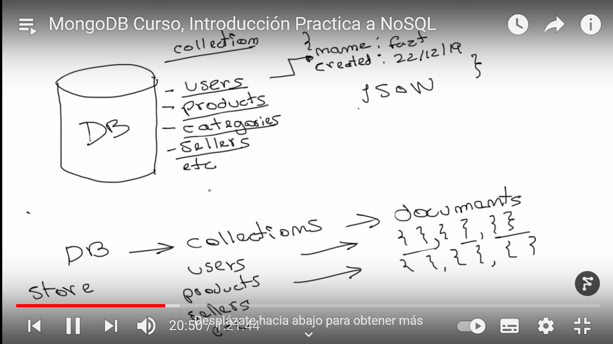
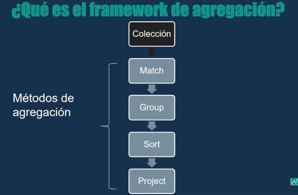

MongoDB
Posee un esqeuma no fijo donde se puede insertar diferentes tipos de datos sin ser rachazado o k salga msj de error
Tranforma los objetos de formato JSON a BSON(binario) para el mejor manejo de los datos
MongoDB (del inglés humongous, "enorme") es un sistema de base de datos NoSQL, orientado a documentos y de código abierto.
En lugar de guardar los datos en tablas, tal y como se hace en las bases de datos relacionales, MongoDB guarda estructuras de datos BSON (una especificación
similar a JSON) con un esquema dinámico, haciendo que la integración de los datos en ciertas aplicaciones sea más fácil y rápida.

Para Iniciar MongoDB
Primero abrimos cmd y luego ponemos mongod , se ejecutara el servidor y lo dejamos abierto
Segundo paso abri otro cmd como administrador y ejecutar el comando mongo
En el segundo cmd se podra crear las BD de mongodb
Los operadores van acompañado del simbolo($) como x ejm $set,$type,$gt,$inc,$rename
Los metodos van acompañado de los parentesis() como x ejm find(), update(), count(), limit()
Funciones
DataBase: test, es la base de datos por defecto de mongodb
- show dbs =>Muestra todas las bases de datos
- db => Muestra la base de datos que estamos usando
- use database => Sirve para crear y/o usar la base de datos
- db.dropDatabase() =>Sirve para eliminar la base de datos actual
- db.createCollection("Nombre_de_la_coleccion") =>Forma de crear coleciones
- db.nombre_coleccion.renameCollection("Nombre_nuevo_coleccion") =>Cambiar nombre de colecion
- show collections => Muestra las colecciones
- db.nombre_coleccion.drop() =>Se elimina toda la coleccion elegida
- b.nombre_coleccion.deleteOne({_id:1})=>Se borra el documento con el filtro
- b.nombre_coleccion.deleteMany({})=>Se borra todo los documentos dentro de la collecion especificada
- b.nombre_coleccion.deleteMany({Peli:"Hola",anio:2000})=>Se borra todo los documentos que coincida con cualquiera de los filtros
- db.nombre_coleccion.insertOne({"name":"laptop"}) =>Insertamos una coleccion y dentro de parentesis un documento
- db.nombre_coleccion.insert([{"name":"laptop"},{"name":"mouse"}]) =>Insertamos varias colecciones y dentro de parentesis un documento
- db.nombre_coleccion.insertMany([{"name":"laptop"},{"name":"mouse"}]) =>Insertamos varias colecciones y dentro de parentesis un documento
- db.nombre_coleccion.insert([{_id:2,Pelicula:"Harry Poter"},{_id:3,Pelicula:"One Piece"}],{ordered:false})=>Con ordered false si hay error agrega el k no falla, si se pone true no agrega nignuna en caso de error
- db.nombre_coleccion.remove({"id":123}) =>Se elimina solo el documento elegido
- db.nombre_coleccion.find().pretty() =>Muestra todos los documentos alojados en la coleccion
- db.nombre_coleccion.find().limit(2) =>Muestra los 2 primeros documentos alojados en la coleccion
- db.nombre_coleccion.find()[n] => Accede a la posicion que indiques en el n.
- db.nombre_coleccion.find().count() =>Cuenta la cantidad de documentos alojados en la coleccion
- db.nombre_coleccion.find({"name":"computadora"}).pretty() =>Muestra el documentos que cumpla con el name
- db.nombre_coleccion.find({"name":"computadora"},{"_id":0}).pretty() =>Muestra el documentos que cumpla con el name y no muestra su id(0 no muestra)
- db.nombre_coleccion.find({"name":"computadora"},{"_id":1}).pretty() =>Muestra el documentos que cumpla con el name y muestra su id(1 si muestra)
- db.nombre_coleccion.find({"name":"computadora"}).sort(name:1).pretty() =>Muestra el documentos ordenado alfabeticamente con el name, ascendente(1) y descendente(-1)
- db.nombre_coleccion.findOne({"name":"computadora"}) =>Muestra el primer documento que cumpla con el name
- db.nombre_collection.find().forEach(element=>print(element.nombre_atributo))
- db.nombre_collection.find({"anio":{$type:"string"}})=>Busca los documentos k se registraron con anio tipo string
- db.nombre_collection.find({anio:{$gt:2015}})=>Busca los documentos k tengan el año mayor a 2015
- db.nombre_collection.find({anio:{$gte:2015}})=>Busca los documentos k tengan el año mayor e igual a 2015
- db.nombre_collection.find({anio:{$lt:2015}})=>Busca los documentos k tengan el año menor a 2015
- db.nombre_collection.find({anio:{$lt:2015}})=>Busca los documentos k tengan el año menor igual a 2015
- db.nombre_collection.find({anio:{$in:[2015,2017,2020]}})=>Busca los documentos k sean del año 2015,2017,2020 puede tomar varios valores
- db.nombre_collection.find({anio:{$nin:[2015,2017,2020]}})=>Busca los documentos k NO sean del año 2015,2017,2020 puede tomar varios valores
- db.nombre_collection.find({$and:[{fec_ini_cdto:{$gte:"2020-02-01"}},{fec_ini_cdto:{$lte:"2020-02-02"}}]})=>El operador $and hace que tenga k coincidir todos los filtros
- db.nombre_collection.find({$or:[{fec_ini_cdto:{$gte:"2020-02-01"}},{fec_ini_cdto:{$lte:"2020-02-02"}}]})=>El operador $or basta k solo coincida un filtro
- db.nombre_collection.find({no_cdtos:{$not:{$lte:350}}})=>Cumple con traer a los que NO son menores de 350, osea niega la condicion
- db.nombre_collection.find({$nor:[{fec_ini_cdto:{$lte:"2020-03-01"}}]})=>Es igual al operador $not solo que aqui se manda como matriz
- db.nombre_collection.find({anio:{$exists:true}})=>Trae solo los documnetos que tengan el campo anio
- db.nombre_collection.find({Pelicula:{$regex:/war/}})=>Trae todos los documentos que contengan war dentro de su valor, siempre va entre //
- db.nombre_collection.find({$expr:{$gte:["$no_clientes","$no_cdtos"]}})=>Crea expresiones donde puedo copara el valor de 2 campos
- db.nombre_collection.find({campo:{$size:4}})=>El $size devuelve el documento que contenga 4 valores en el campo, ojo debe ser matriz
- db.nombre_collection.find({actores:{$all:["actor1","actor2"]}})=>Trae a todos los documentos que contengan a los 2 actores, es similar al operador $and
- db.nombre_collection.find({actores:{$elemMatch:{edad:{$gte:25,$lte:30}}}})=>Busca el filtro dentro de un obeto o matriz, las condiciones dentro del $elemMatch deben de cumplirse
- db.nombre_collection.find().sort({anio:-1,Pelicula:1})=>Ordena dando prioridad de left to right . (1)Ascendente (-1)Descendente
- db.nombre_collection.find().sort({Pelicula:1}).skip(5)=>Primero ordenara y luego proyectara omitiendo los 5 primeros resultados
- db.nombre_colecion.find({"aqui va el filtro"},{actores:{$slice:3}})=>El operador $slice sirve para partir una matriz y solo mostrar la cant k especificas
- db.nombre_coleccion.findOne({"name":"pedro"}).name_campo_mostrar => Accede al registro con la condicion y solo muestra el valor de la campo
- db.nombre_coleccion.find({"name":"computadora"},{"name":1,"description":1}) =>Muestra el primer documento que cumpla con el name y solo Muestra el Name y description, y con el 0 hace que no se muestre dicho atributo
- db.nombre_collection.replaceOne({"name":"producto"},{"name2":"producto2","name3":"valor3"}) =>Remplaza un documento x otro
- db.nombre_collection.replaceOne({"name":"producto"},{"name2":"producto2","name3":"valor3"},{upsert:true}) =>Remplaza un documento x otro y si no encuentra lo agrega
- db.nombre_collection.update({"name":"producto"},{"name2":"producto2","precio":222}) =>Actualizar solo el primer documento con coincidencia
- db.nombre_collection.update({"name":"producto"},{$set:{"name1":"producto","precio":222}},{multi:true}) =>Actualizar todo los documentos con coincidencia
- db.nombre_collection.update({"campo1":"valor1"},{$set:{"campo2":"valor2"}}) =>De esta forma ingresamos mas campos a la coleccion
- db.nombre_collection.update({"campo1":"valor1"},{$set:{"campo2":"valor2"}},{upsert:true}) =>De esta forma ingresamos mas campos a la coleccion, si no lo encuentra lo crea
- db.nombre_collection.update({"campo1":"valor1"},{$inc:{"campoNumerico":100}}) =>De esta forma el campo numerico incrementa en 100 unidades
- db.nombre_collection.update({"campo1":"valor1"},{$rename:{"campo1":"campo2"}})=>Con $rename cambio el nombre de los campos
- db.nombre_colecion.update({Pelicula:"El libro de la Selva"},{$min:{anio:2000}})=>Va realizar la actualizacion si es k es año especificado es menor al k esta asignado actualmente
- db.nombre_colecion.update({Pelicula:"El libro de la Selva"},{$max:{anio:2000}})=>Va realizar la actualizacion si es k es año especificado es mayor al k esta asignado actualmente
- db.nombre_colecion.update({Pelicula:"El libro de la Selva"},{$mul:{anio:2}})=>Va realizar la actualizacion multiplicando el valor actual con el valor asignado recien
- db.nombre_colecion.update({Pelicula:"Black Widow"},{$unset:{anio:""}})=>Borra el campo que pongas despues del operador $unset, ejm borrara el anio
- db.inventory.insertMany([{"item":"planner","stock":[{"warehouse":"A","qty":40},{"warehouse":"B","qty":5}]}]) =>Se crea una matriz dentro del campo stock
- db.inventory.find({"stock.warehouse":"A"})=>Accedemos a la matriz de sotck y hacemos una busqueda
- db.inventory.find({"stock.0.warehouse":"B"},{"_id":0}) =>El 0 indica la posicion del primer warehouse
- var Auxiliar = db.patron.findOne({name:"Boris Flores"})._id=>Guardamos el resultado dentro de la variable
- db.address.findOne({nombre_campo:Auxiliar})=>Obtenemos los datos a partir de la variable
Mongoimport para importar objetos JSON
Para usar debes de instalar mongodb tool database para usar el mongoimport
- mongoimport --db nombre_de_bd --collection nombre_de_coleccion --type csv --headerline --file c:\Users\Boris\ruta_de_bd.csv=>Aqui se importo una bd k esta en un excel

- db.nombre_colecion.aggregate([
... {$match:{"no_cdtos":{$gte:352}}}
... ])=>Primera etapa del Frame es la filtracion($match)
- db.nombre_colecion.aggregate([ {$match:{"B_adeudo":"Con adeudo"}}, {$group:{_id:{id_sucursal:"$id_sucursal"},clientes_adeudo:{$sum:"$no_clientes"}}} ])=>Luego entra la ETAPA DE AGRUPAR
- db.pruebaxls.aggregate([ {$match:{"B_adeudo":"Con adeudo"}}, {$group:{_id:{id_sucursal:"$id_sucursal"},clientes_adeudo:{$sum:"$no_clientes"}}}, {$sort:{"clientes_adeudo":-1}} ])=>Luego entra la ETAPA DE ORDENAR
- db.pruebaxls.aggregate([ {$match:{"B_adeudo":"Con adeudo"}}, {$group:{_id:{id_sucursal:"$id_sucursal"},clientes_adeudo:{$sum:"$no_clientes"}}}, {$sort:{"clientes_adeudo":-1}},{$project:{_id:0}} ])=>Con $project selecciona k campo mostrar con 1 y (0)NO MOSTRAR
- db.pruebaxls.aggregate([ {$match:{"B_adeudo":"Con adeudo"}}, {$group:{_id:{id_sucursal:"$id_sucursal"},clientes_adeudo:{$sum:"$no_clientes"}}}, {$sort:{"clientes_adeudo":-1}},{$project:{clientes_adeudo:1,campo_nuevo:{$concat:["Este es un campo", " nuevo"]}}} ])=>El $concat concatena cadenas
- db.createUser({
user:'dev',
pwd:'dev',
roles:[{
role:'readWrite',
db:'todos'
}]
}) =>Se crea usuario
Ejemplo de JSON
{
db.products.insert([
{
"name": "mouse",
"description": "razer mouse",
"tags": ["computer","gaming"],
"quantity": 14,
"created_at": new Date()
},
{
"name": "monitor",
"description": "lg monitor",
"tags": ["computer","gaming"],
"quantity": 3,
"created_at": new Date()
}
])
}